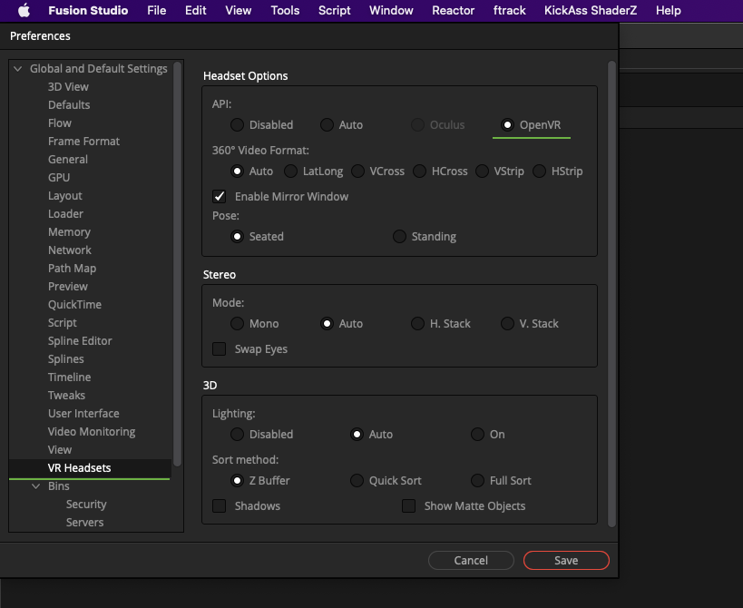
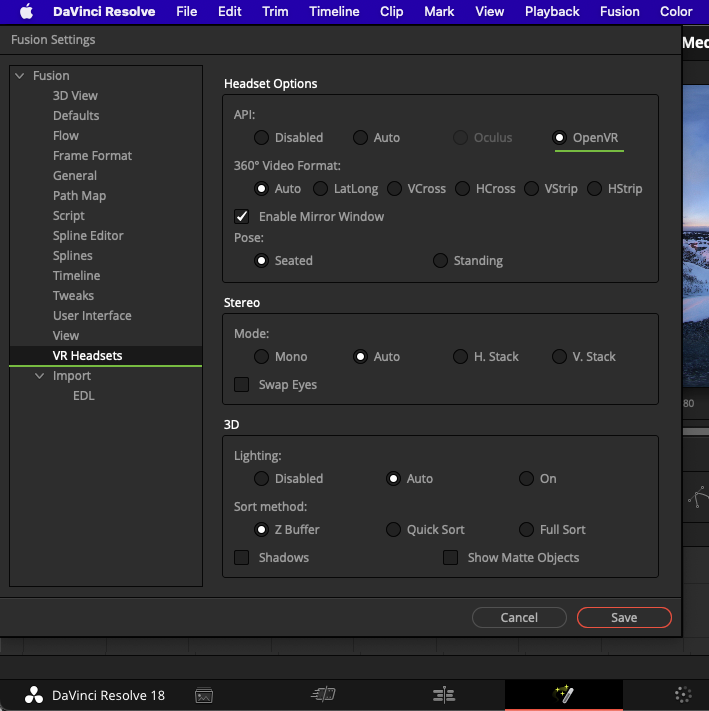
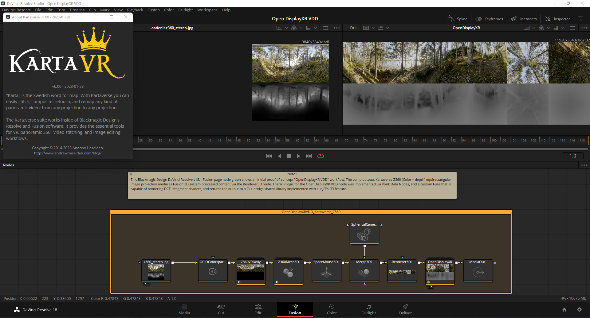
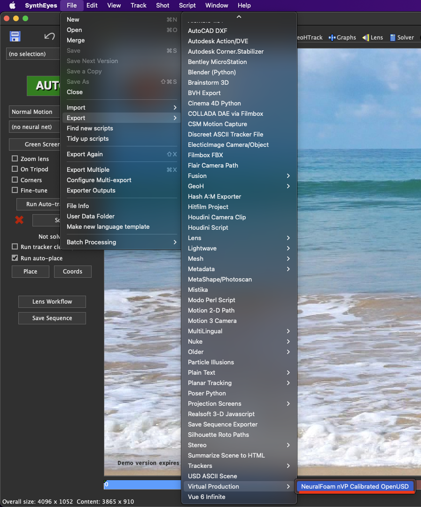
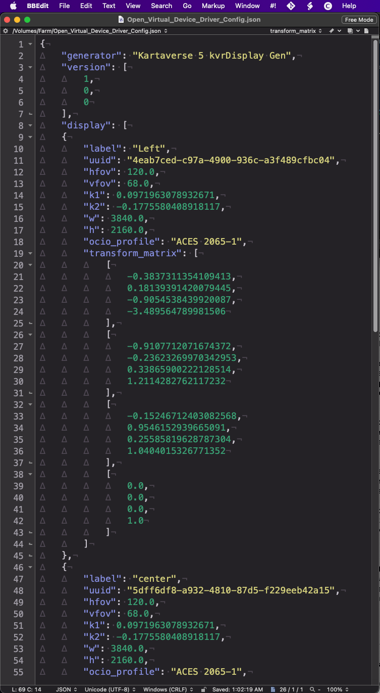

OpenDisplayXR/VDD
OpenDisplayXR/VDD (Virtual Device Driver)
"A Simulated OpenVR/OpenXR-Based Virtual Hardware Device"
Document source on docs.google.com
Project workspace https://github.com/OpenDisplayXR
Project Objectives¶
Create a working group to develop a cross-platform compatible, hybrid OpenVR/OpenXR API-based virtual display driver solution for arbitrary multi-view display, and video projection hardware.
When completed, the "OpenDisplayXR VDD (Virtual Device Driver)" toolset works as a simulated OpenVR/OpenXR-based virtual hardware device.
The VDD software powers the visual output that is sent in real-time to multiple displays in parallel. The VDD SDK allows you to transform-VR optimised graphics rendering API calls into a pipeline for arbitrary multi-view stereo media creation.
The final-frame pixels can be rendered on any number of local-region hosted Amazon AWS EC2 instances, or the full process can run 100% locally on-prem with a GPU-equipped laptop, desktop, workstation, rack-mounted server, or a virtualized VIRSH/QEMU compute instance with hardware accelerated PCIe passthrough support.
The modular codebase that the OpenDisplayXR project is creating, right now, is covered by a 100% free, open-source "license mix" based Apache/NVIDIA source code license terms, based upon the individual VDD microservices you install.
A virtual device driver rendering approach allows existing DCC (Digital Content Creation) software, that supports conventional VR HMDs (Head Mounted Displays), to automatically work interactively with arbitrary 3rd party immersive display systems used for stereoscopic, 360VR, 180VR, iDome, SfM, lightfield, and multi-view applications.
This user-programmable image generation bridge layer offers more flexibility, that enables use cases like the ability to drive in real-time passive 3D stereo-monitor display solutions, immersive caves, fulldome theatres, projection mapping, virtual production LED stages with composting-created live-action stitched 360VR cylindrical video and 2D/2.5D/3D digital matte paintings.
Modular VDD Microservices¶
A foundational, key design aspect of the "OpenDisplayXR VDD (Virtual Device Driver)" SDK rollout, is the consistent use of a microservices architecture. The use of microservices is applied equally to internal core operators and external user-added microservice features. All microservice plugins get bare-metal direct access to the rendering hardware and VDD-API-provided functions.
The OpenDisplayXR VDD operator nodes are designed to be chained together in novel ways by the end user. This process is streamlined, with the help of a powerful preset system, visual macro-building tools, and support for deeply nested, externally referenced flowcharts.
When the node graph is evaluated (cooked) during real-time playback, a node-based concatenation approach is used by the VDD node's chosen JIT (Just in Time) compiler that is designed to optimize the rendering performance. Memory management is improved by the JIT compiler's ability to dynamically flatten a series of "chained operations" at render time if the nodes have matching class types.
Background: The VDD API design choice to rely on node-based microservices comes from experiences learned during the development of the open-source Vonk Data Node project. Vonk includes 329 fuses.
A fuse is created as a plain-text-based LuaJIT plugin. Data nodes are interconnected in a DAG (Directed Acyclic Graph) like nodal environment, through the use of a wide range of node-based input and output connection data types that can be converted (and typecasted on the fly) as needed.
Nodal Operator Types¶
The node-based content that defines a specific VDD setup, is exported to disk via a DOM (Document Object Model) approach into either a plain-text encoded JSON file, or a CompX-flavored OpenUSD ASCII (.usda) file.
End users can extend any of the operators available inside the micro-services architecture via the installation of plain-text-based JIT-evaluated plugins, or compiled C++ based plugins.
Full source-code access is provided for all internal VDD micro-service operators, which allows the core features to be customized and extended by the end user on an as-needed basis.
The core operator types used in a typical multi-view OpenXR-OpenVR driven VDD project include:
- HID Input
- Output Driver
- Fragment Shaders
- Data Nodes
- Scripting
- Network Transport
End users are free to implement support for new class types in their own microservice plugins. Through the use of a JIT architecture, VDD supports the creation and use of arbitrary "data node" based input and output data types on-the-fly.
Microservices Package Manager¶
OpenDisplayXR has a custom LuaJIT-based package manager that is under development.
To streamline deployments, the package manager will allow administrators to perform "network broadcast based" syncing of custom microservice plugins across a local subnet of GPU-based worker nodes.
Newly added microservices that are code-signed, and approved for use by a sysadmin, will be re-initialized in only a few moments by the VDD controller process. This allows deployments to occur in a transparent "system wide" fashion that works seamlessly across a large GPU clutter that runs across several different operating systems and CPU/GPU architectures.
Microservice updates happen in a low-friction fashion, without requiring the end-user to quit a VDD integration plugin's host process, or requiring someone to re-launch a CLI worker's executable or needing a reboot of the system. This feature dramatically minimizes downtime and keeps the real-time distributed rendering system online, and ready for use in a high-availability state.
The design concepts of the VDD package manager implementation are inspired by the success of the Steakunderwater forum hosted Blackmagic Resolve/Fusion community project called the "Reactor Package Manager".
Reactor uses a modular .atom formatted Lua table structure to define installation bundles that are sourced from any number of user-configured, public or private GitLab/GitHub repos, or local/NAS based disk storage location.
Build a 6DoF RT Previsualization Station¶
Previsualization supervisors will enjoy the way VDD assists workstation-based previsualization tasks, like time-consuming "techviz". The Viz operational steps are accelerated by an order of magnitude by OpenDisplayXR. This efficiency is achieved, in-part through the removal of disk-based intermediate video/image files, media transcoding, which has the added bonus of reducing file server I/O operations, and significantly cuts down on unnecessary network bandwidth consumption.
The VDD interface has a unique capability to dramatically simplify the process of connecting a HDR "video texture" pixel stream output, from a best-in-class NLE video timeline, or a colourist suite, directly to an external real-time 3D engine based visualisation tool. By doing this process, OpenDisplayXR supports 6DoF room-scale previsualization approaches of arbitrary image projection based media with assistance provided by a system's native OpenVR and OpenXR APIs.
For in-office design review tasks, it is very effective to let OpenDisplayXR manage the visual image generating pipeline. A VDD can send multi-view media in a transparent fashion to large format passive stereo 3D monitoring solutions, like a 3D PluraView monitor. This class of passive display hardware makes it possible for 3 co-workers to wear light-weight polarizer glasses, at the same time, to collaborate and provide direct feedback on creative design or engineering tasks.
Plain-Text JSON-Based Settings¶
A single .json-based configuration file automatically configures all relevant parameters required to define a new hardware display product DCC integration. This makes it possible to rapidly test and iterate on new hardware setups without requiring the end user/integrator to maintain a complex build toolchain.
User Input¶
Optionally, any of the connected HID (Human Interface Devices) could be activated in the virtual device driver preferences so they are passed through the virtual VR/XR bridge interface to the host DCC package. This makes it possible for the HID hardware to appear as an emulated VR controller style of input device.
When the alternative input device is configured as a simulated VR controller, input remapping techniques can change the nature of the input data stream, to establish constraints and range of motion limits, or to perform 3D coordinate system-based transforms for planar 2D motion-based input devices like graphics tablets or mice.
Output Driver¶
An extensible "output driver" based plugin system allows live-rendered framebuffer data to pass with ultra-low latency from the virtual device driver interface into a post-processing stack that supports external libraries, and fragment shaders.
The Output Driver is GPU accelerated via common cross-platform compatible rendering APIs (CUDA, DirectX DXR, OpenCL, Metal, OpenGL). The VRAM based framebuffer in the output driver supports layering ML (Machine Learning) neural style transfer effects, deep dream effects, and Hugging Face transformer models.
When running at a reduced frame rate, deferred rendering of Stable Diffusion 2.0 "img2img" generators are possible with latent space support, including the use of multiple rasteror vector-shape based alpha masks for effects like ML-driven content-aware fill, seamless blending, and in/out painting.
An "output driver" concept enables a wide range of customer-created solutions to be achieved such as; Applying WarpMesh techniques for iDome projection, using RTSP/HLS streaming video encoders, passing media to NDI-based IP video streaming connections, working with a frame server solution such as Syphon or Spout FFGL that utilise shared video memory techniques for VJing applications.
Temporal Feedback Loop Buffer¶
Customizable in-memory visual feedback loops can be used inside the VDD output driver module. This is a wonderful feature if you need to create MVS compatible "onion-skinning" animation overlays, or to generate temporally delayed fadeable motion trail "visual echos" effects with a subtractive luminance decay. A feedback loop is also interesting when used with highly-stylized audio-reactive multi-pass image distortion effects used in immersive VJing.
The feedback system has a FIFO 4D frame buffer duration parameter to support time-offsets.
The multi-view VRAM stored FIFO frame buffer is also helpful when animating or retraining ML transformer models to build up the visual appearance of ML synthesized "emergent design behaviours".
A good starting point is to try the visual feedback loop feature out, with a ShaderToy sourced fragment shader (like pixel sorting) applied in the VDD output driver stack.
This combination of ML and fragment shader effects will very often result in the creation of artistically unique evolving 4D pipe-dream-esque imagery.
Live 360VR Media Reframing¶
For in-context immersive media review tasks, such as LED fulldome show QA checks, it is helpful to pass the raw multi-view media directly to the external process via shared memory, or with the use of pixel streaming to an external 360VR immersive media playback tool.
Virtual Environment Simulation¶
Complex "nested-visual simulation" workflows can be satisfied using the generated pixel-streaming framebuffer content as a 2D texture map that is reapplied to a mesh within a game-engine centric virtual production LED stage techviz toolset. The 3rd party previz/techviz tools would apply the generated pixel-streamed data on the fly to a textured "screen surface" that is part of a 1:1 3D scale model of a simulated sound stage/ LED dome theatre environment.
Scripted Actions & Callback Events¶
Lua scripting could be used in the virtual device driver HID settings to configure and apply scripted actions or replay pre-recorded "input motion" clips that are passed through as simulated HID control input data with absolute coordinates or relative coordinate system offsets. The scripted action system could be triggered by any of the mappable Aux (Auxiliary) input controls on HID devices, or via OSC (Open Sound Control) based protocol signals via tools like TouchOSC or MIDI hardware.
Initial R&D Team¶
Developers
- Andrew Hazelden (Dover Studios and Kartaverse), Canada, Principal Researcher
- Paul Bourke, Australia, Digital capture and processing for immersive displays
Creative
- Antonio Victor Garcia-Serrano (Zakato360), Spain, Creative Advisor
- Alexandre Regeffe, France, Creative Advisor
- Frederic Fermon (CST - Commission Suprieure Technique), France, Creative Advisor
- Hogan Burrows (Untitled Project), Singapore, Creative Advisor
- Jared Sandrew, USA, Creative Advisor
- Joergen Geerds (KonceptVR), USA, Creative Advisor
Technical
- Alexis Haggar(LexhagVFX), UK, Technical Advisor
- Alexey Bogomolov, Technical Advisor
- Marc-Antoine Desjardins, Canada, Technical Advisor
- Peregrine Mc Cafferty, UK, Technical Advisor
Fulldome
- Allen Rose, USA, Technical Advisor
- Dario Tiveron (FDDB), Italy, Creative Advisor
- Greg Downing (Hyperacuity), USA, Creative Advisor
- Matthew Dougherty (NOAA), USA, Lead Technical Advisor
- Paul Mowbray (NSC Creative), UK, Creative Advisor
- Peter Morse, Tasmania, Creative Advisor
Virtual Production
- Aurore de Blois (Drengr Bilder), UK, Creative Advisor
- Tobias Falk (Cinegrace), Sweden, Technical Advisor
- Tomas Wall (Cinegrace), Sweden, Technical Advisor
- Kino Gil (Kino Digital), USA, Creative Advisor
Industry Partners
- Josef J. Schneider, (Schneider Digital), Germany, Display Hardware Vendor
- Lutz Moehr, (Schneider Digital and 3D-CC / DNS Consult), Germany, Consultant / Networker / Event organizer
Software Interface¶
The virtual device driver is bound to the external DCC package using the conventional OpenVR/OpenXR support in the host toolset.
The following screenshot shows Blackmagic Design's Fusion Studio compositing software. The "VR Headset" preference is used to define "OpenVR" as the active API. This single control is the only setting required to allow a 3rd party OpenVR/OpenXR virtual device driver to be enabled on the DCC package side of things.
Blackmagic Design's DaVinci Resolve Studio video editing and color correction software uses the same style of HMD connectivity settings as are present in the Fusion page.

Node Based Workflows

This Blackmagic Design DaVinci Resolve v18.1 Fusion page node graph shows an initial proof-of-concept "OpenDisplayXR VDD" workflow. The comp imports Kartaverse Z360 (Color + depth) equirectangular image projection media as a Fusion 3D system processed content via the Renderer3D node. The WIP logic for the OpenDisplayXR VDD node was implemented via Vonk Data Nodes, and a custom Fuse that is capable of rendering DCTL fragment shaders, and returns the output to a C++ bridge shared library implemented with LuaJIT's FFI feature.
Demo Apps¶
NeuralFoam for SynthEyes Pro¶
Andersson Technologies production-proven "SynthEyes Pro" matchmoving software is now able to export directly to a NeuralFoam flavoured OpenUSD ASCII (.usda) format for faster, more precise, and reliable, NeRF camera 4x4 transform matrix alignment.
This unique, SynthEyes powered, multi-view camera tracking and neural rendering based workflow allows NVIDIA InstantNGP based NeRF scenes to be created more efficiently.
SynthEyes already has an efficient UI that provides access to manual and supervised trackers, fine-grained editing of camera paths via spline editing controls, and the ability to intuitively control the scene origin, scale, and world Up-axis coordinate system.

SynthEyes is able to export a non-NeRF based output for use in all common DCC programs, as well as in NLE packages like Resolve.
The following YouTube video, by Russ Andersson, explores what is possible with SynthEyes Pro's USD (Universal Scene Description) format capabilities.
Exporting a NeuralFoam ready camera transform matrix from SynthEyes Pro is as easy as selecting the "File > Export > Virtual Production > NeuralFoam nVP Calibrated OpenUSD" menu item. A Universal Scene Description ASCII encoded file is exported to disk with a unique "CompX" schema embedded that makes multi-view and volumetric content creation workflows friendlier.
Having both NeRF and conventional match moving/photogrammetry export paths in SynthEyes Pro allows the creation of a hybrid volumetric scene with point clouds, meshes, multi-view 3D camera locators, stand-in geometry, and 3D locators.
A pre-existing SynthEyes + Resolve based workflow tutorial, by one of the VDD developers, is available. The video shows how quickly an aerial scene shot on a drone can be camera tracked, and then loaded directly as a node-based 3D composite in the Fusion page.
The OpenDisplayXR SDK provided sizzle scripts are installed to:
/Applications/SynthEyes/scripts/Virtual Production/neuralfoam.szl
C:\Program Files\Andersson Technologies LLC\SynthEyes\scripts\Virtual Production\neuralfoam.szl
NeuralFoam OFX Plugin¶
A C++ based OFX plugin named "NeuralFoam Engine for Resolve" will be included with the finished OpenXR/OpenVR compatible Virtual Device Driver SDK.

The OpenFX node is a port of the NVIDIA InstantNGP TestBed executable with OpenXR SDK supportincluded for direct 6DoF HMD connectivity.
Check out the guide "Kartaverse Workflows | Creating Volumetric NeRFs" for more information about live-action based NeRF capture workflows, and how to build InstantNGP from source. A next-gen nVP workflow guide is available that acts as a semi-official overview of nVP concepts for LED volume creation. The document is titled "Kartaverse Workflows | Building an Effective nVP (Neural Virtual Production) Sound Stage".
NeuralFoam Worker CLI¶
Additionally, a standalone CLI launched "NeuralFoam Worker Node" will be included with the OpenDisplayXR VDD SDK when it is released.
This neural rendering client is a direct adaptation of Thomas Mller & Alex Evans' NeRF testbed executable. The testbed code is available publicly from NVIDIA's GitHub page for InstantNGP under an NVIDIA Source Code License.
The ported open-source code was redesigned by the VDD developers to better handle HPC workloads, with load balancing, task scheduling, and XML-RPC socket support. The worker supports dynamic GPU performance tuning with support for temperature sensing, and automatic GPU fan speed control. When extreme performance is required, user-controlled tweaks can be defined for GPU parameters like core voltage (mV), core clock (MHz), memory clock (MHz), power limits, and temperature limits.
The NeuralFoam worker runs its rendering process in a 100% real-time fashion with an immediate mode UX overlay for advanced cluster rendering diagnostics. Pixel streaming techniques are used to either pass image tiles back to the "NeuralFoam Engine" controller host software package (like Resolve) where the buckets are re-assembled into a unified image, or the tiles can be batched together into larger regions, recombined, and then routed via Ethernet, NDI, or SDI, so the image data arrives at a predefined LED processor device that is connected to a specific LED panel on the LED sound stage video wall.
The NeRF generated render bucket tasks are distributed across a GPU cluster using a form of tile-based distributed rendering acceleration. The buckets are responsive and intelligent in that each render thread controls a dynamically sized multi-channel HDRI framebuffer. The pixel data is tunnelled over a conventional network using a parallel I/O approach that passes data through a series of high-speed low-latency pixel streaming connections.
The NeuralFoam Worker executable is capable of running affordably with a rack-mounted NVIDIA RTX GPU enabled server that hosts an NVLink bridge connected pair of 3090/3090 TI graphics cards.
A local cluster of GPU powered worker nodes are synced to a line-level accurate genlock unit. The active Workers perform the real-time distributed rendering of large NeRF scenes with the assistance of camera Frustum-defined DoD (Domain of Definition) 3D region cropping.
An OpenDisplayXR VDD hardware certified NeRF render node is useful in virtual production LED stage environments where large-scale neural radiance fields provide a compelling alternative to traditional "machinima" style OpenGL/DirectX based graphics.
NeRF NTB (Neural Texture Baker)¶
A sample NeRF-based NTB (Neural Texture Baker) tool is planned for release with the official Open DisplayXR SDK.
NeRF scene graphs are interesting for immersive media content creators, and nVP (Neural Virtual Production) usage, as they allow a neural encoded representation of photorealistic lighting, shading, transparency, reflections, refractions, Beer's law colour-absorption, polarized lighting, and SSS(Subsurface Scattering).
The NeRF NTB executable generates temporally stable animated texture maps that can be used on mesh sequence and point cloud sequence outputs. This is an excellent choice for workflows that need both NeRF flythrough renders, while also creating mobile-friendly AR .usdz-based assets that work efficiently on iPhones and iPad tablets as well as desktop systems for use in AAA quality USDZ encoded AR/MR/XR experiences.
The provided source code and project files for NTB performs a unique MVS(multi-view stereo) centric version of geometry-defined texture baking operations. The supported output data formats are OpenUSD Clips, and e57 sequence-based dense point clouds.
The final baked texture maps are exported as a multi-view encoded multi-part EXR image sequence with an anisotropic filtered, MIP-Mapped tiled encoding, using either None, ZIPS, or DWAA image compression.
The NTB executable connects to an OpenDisplayXR .json preference file to access the transform matrix data for each of the multi-view definitions. These locator positions drive the positional values used for transferring NeRF shading information in a view-dependent fashion into a PTEX or UDIM-based UV layout on the polygon model.
Creased Sub-D (Catmull-Clark subdivision surfaces) meshes with full-character rig skeletons are supported correctly with the texture transfer operation, however interactive performance is reduced.
OpenUSD variants allow for the use of multi-resolution LOD (Level-of-Detail) sets on the imported models. The NTB texture transfer operation is effectively repeated for each LOD level present in a model and is accessed typically via USD VariantSet.
OpenUSD .usdc (binary encoded) or .usda (ASCII encoded) scenes that use USD compositionfeatures often take advantage of reference layers and point instances. These scene-graph hierarchies are correctly evaluated when the texture baking occurs. Pixar's OpenUSD team provides additional information on OpenUSD terminology which can be handy for new users.
A powerful token-based approach is offered to control the texture map output file naming syntax, and the EXR multi-part/multi-channel layer names. Per-frame-based OpenDisplayXR VDD metadata records can be encoded into each model and texture map if desired. This metadata system is compatible with node-based tools that support powerful "data node" workflows during post-production.
The content production pipeline-friendly metadata passthrough feature includes support for retaining the original VDD-captured HID input data, a DOM-encoded version of the current VDD .json settings and external side-car file metadata that holds values like YAML-encoded lens information from protocols likeCooke /i Technology lenses, or camera tracking information.
JSON Config File¶
A JSON-based configuration file is used to define the display parameters for the connected output video streams.
This is an early proof-of-concept JSON file to express the display device/input device centric syntax needed for a passive stereo 3D display that has three frame buffers: a left view, a centre view (monoscopic 2D), and a right eye view.
